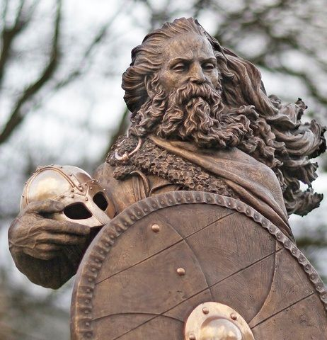

HARALD FAIRHAIR
¿Quién fue Harald Fairhair?
Harald Fairhair, conocido en nórdico antiguo como Haraldr hárfagri, es considerado tradicionalmente como el primer rey que unificó Noruega en el siglo IX. Su figura se encuentra a medio camino entre la historia y la leyenda, pero su influencia en la consolidación de los reinos noruegos y en la identidad nacional escandinava ha sido crucial. Su vida refleja el poder, la ambición y la complejidad política de la era vikinga.
Orígenes y Juventud
Harald nació alrededor del año 850 d.C., en una época en que Noruega estaba dividida en numerosos pequeños reinos, cada uno gobernado por clanes locales y caudillos. Era hijo de Halfdan el Negro, un poderoso caudillo de varias regiones del sur de Noruega. Tras la muerte de su padre, Harald heredó varios territorios y se convirtió en uno de los jefes más influyentes del momento.
Desde joven, Harald demostró ser ambicioso, valiente y decidido. Según las sagas nórdicas, una de sus principales motivaciones para conquistar Noruega fue una promesa hecha a una mujer noble llamada Gyda, quien se negó a casarse con él hasta que fuera rey de toda Noruega. Inspirado por esto, Harald juró que no se cortaría ni peinaría el cabello hasta haber logrado la unificación, de ahí su apodo “Hårfagre”, que significa “Cabello Hermoso”.
La Unificación de Noruega
Durante muchos años, Harald libró batallas contra otros reyes y jefes locales para expandir su dominio. La lucha culminó con la Batalla de Hafrsfjord, que se estima ocurrió alrededor del año 872 d.C. En esta batalla decisiva, Harald derrotó a una alianza de reyes del oeste de Noruega, consolidando así su control sobre gran parte del territorio.
Tras su victoria en Hafrsfjord, Harald fue reconocido como el primer rey de toda Noruega. Esta unificación no fue total ni inmediata, ya que aún existían regiones autónomas y resistencia, pero marcó el inicio del reino noruego como una entidad política unificada.
Para consolidar su poder, Harald exigió lealtad a los jefes locales, confiscó tierras y colocó a sus hijos y aliados en posiciones de poder. Muchos líderes que se opusieron a su autoridad fueron expulsados. Algunos de estos exiliados se establecieron en lugares como Islandia, Escocia y las Islas Feroe, lo que impulsó la expansión vikinga hacia el oeste.
Gobierno y Administración
El reinado de Harald Fairhair fue autoritario y centralizador. Su objetivo era terminar con los conflictos internos y establecer un sistema de gobierno estable. Para ello, reemplazó el modelo tradicional de alianzas entre clanes por una estructura jerárquica en la que él ocupaba el centro del poder.
Harald dividió el reino en regiones controladas por jarls (nobles leales a él), a quienes les otorgaba tierras a cambio de fidelidad y tributo. También fomentó el comercio, la navegación y la expansión marítima, pilares fundamentales de la cultura vikinga.Su estilo de liderazgo no fue bien recibido por todos. Las restricciones a la autonomía local provocaron rebeliones y migraciones masivas. Sin embargo, su firmeza en imponer el orden ayudó a sentar las bases de un estado más cohesionado y organizado.
Familia y Sucesión
Uno de sus hijos más importantes fue Håkon el Bueno, quien fue criado en Inglaterra y más tarde intentó cristianizar Noruega, aunque sin éxito duradero. También destacan Erik Bloodaxe, un rey guerrero que gobernó con mano dura, y Olaf, ancestro de futuros reyes noruegos.
Este esfuerzo por introducir una nueva fe también forma parte de su legado, pues refleja el proceso de transición que vivían los pueblos vikingos. Hacia el siglo XI, el cristianismo comenzó a reemplazar al paganismo en Escandinavia, marcando el final de la era vikinga como tal y el comienzo de su integración al mundo europeo medieval.
Para evitar conflictos, Harald abdicó parcialmente y entregó el poder a su hijo Erik Bloodaxe, aunque siguió teniendo influencia hasta su muerte, que ocurrió alrededor del año 933 d.C., cuando ya era un anciano.